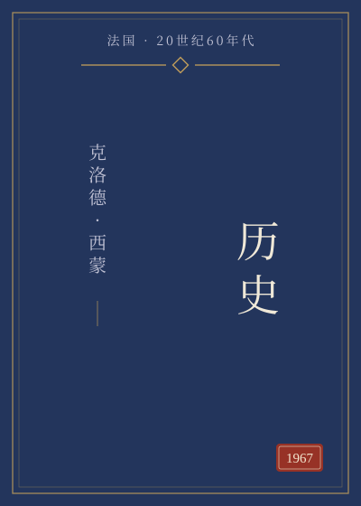
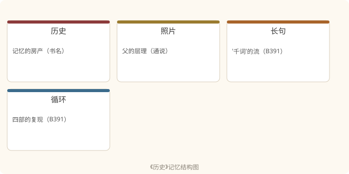

历史
一、基本信息
| 作者 | 克洛德·西蒙 |
|---|---|
| 成书/出版 | 1967年（Britannica B391：Histoire (1967)——'循环四部'之一） Claude Simon — Encyclopaedia Britannica（百科全书） |
| 国别/地区 | 法国 |
| 时代 | 近代 · 20世纪60年代 |
| 体裁 | 长篇小说 |
| 语言 | 法语 |

《历史》记忆结构图（主题·结构图）
二、创作背景
Britannica（B391）：Histoire——与 La Route des Flandres/L'Herbe/La Palace 构成循环四部（人物事件反复）。
Britannica（B391）：风格——'lacking all punctuation and heavy with 1,000-word sentences'——'to capture the very progression of life'。
题材（通说待核）：'历史'与家族记忆：母亲的房产与旧照。
三、内容脉络
（通说待核）'我'继承房产与父亲照片的'历史'。
（通说待核）'无标点'的记忆流（B391）。
四、主要人物表
| 人物 | 身份 | 说明 |
|---|---|---|
| '我' | 继承人 | （通说待核） |
五、主题与艺术特点
- '历史'：记忆与房产（书名语境——通说待核）。
- '千词长句'（B391）。
- 循环四部的人物复现（B391）。
六、影响与评论
- Britannica：'循环四部'之一（B391）。
Claude Simon — Encyclopaedia Britannica（百科全书） - Britannica：1985诺奖（B391 交叉）。
Claude Simon — Encyclopaedia Britannica（百科全书）
七、阅读建议
难点
- '无标点'的长句。
- 家族照的解读。
- 《历史》中译名（《历史》）待核。
- 法文原版。
西蒙循环四部之三。
八、待核实
- 1967年出版细节待核。
- '房产'细节核对（通说）。
- '四部循环'结构核对（B391已载）。